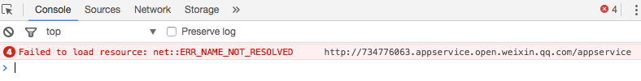
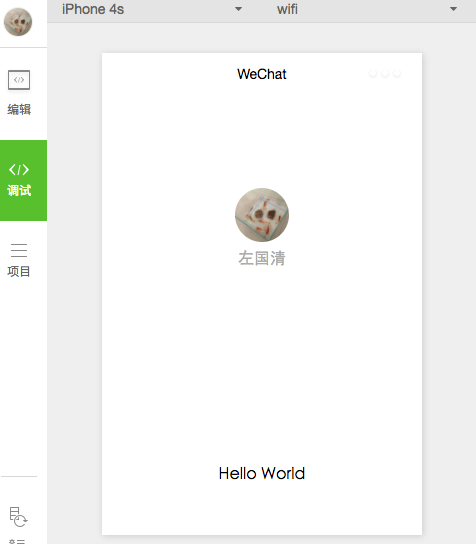
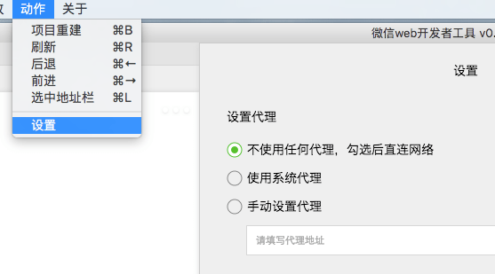

2017/01/09
Author: guoqzuo
微信小程序Failed to load resource: net::ERR_NAME_NOT_RESOLVED
mac版的微信小程序最开始的demo调试时无法运行，报错Failed to load resource:... 网上查了很多资料，是开了网络代理造成的，关掉就可以了，为了方便后来的人更快找到解决方法，就专门写了这篇记录。

关掉代理，重新运行后就可以正常运行了。

或者可以在微信小程序里面设置: 动作-设置-不使用任何代理

参考资料: http://www.henkuai.com/forum.php?mod=viewthread&tid=15371